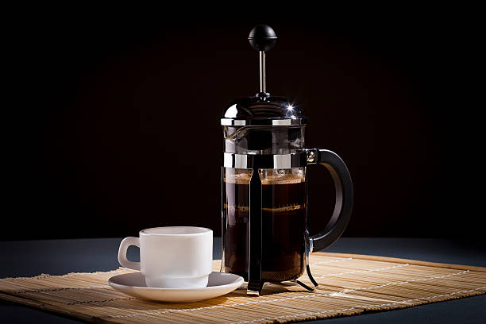

French Press

Description
French press coffee is a delicious alternative to the common drip method. It provides the coffee with a comparatively more developed flavor profile.
Not only do you get a tastier cup, it also requires no filter to be replaced each time.
Ingredients
- Water
- Coarse Grind Coffee
Steps
- Begin boiling 500ml of water.
- Add 3-5 tablespoons of coffee to the press, depending on desired strength.
- Pour the boiling water all into the press.
- Close the lid of the press and wait 5 minutes.
- Open the lid and stir the floating grounds back into the coffee.
- Close the lid and wait 3 minutes.
- Lower the plunger down to the level of the coffee.
- Pour into your cup and enjoy!